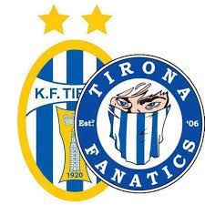

Klubi i Futbollit Tirana është një klub futbolli shqiptar me seli në Tiranë, kryeqytetin e Shqipërisë. Ky ekip është degë e klubit shumësportësh SK Tirana, dhe është klubi i futbollit më i suksesshëm në Shqipëri, duke fituar 54 trofe madhorë të njohur zyrtarisht nga Federata Shqiptare e Futbollit. Ekipi luan në Kategorinë Superiore, liga elitare e futbollit shqiptar. Ndeshjet në shtëpi i luan në Stadiumin Selman Stërmasi.Klubi u themelua më 15 gusht 1920 nën emrin Sport Klub Tirana e më pas Shoqëria Sportive Agimi,[3] dhe dhjetë vite më pas morën pjesë në kampionatin e parë zyrtar kombëtar të zhvilluar në Shqipëri. Që nga ajo kohë, Tirana mori pjesë në çdo kampionat të luajtur. Gjithsesi, vëndi i nëntë në sezonin 2016–17 bëri që klubi të zbriste për herë të parë në Kategorinë e Parë.Tirana ka garuar nën emrin SK Tirana nga viti 1927 e deri në 1947. Më pas regjimi komunist detyroi klubin të garonte me emra të ndryshëm si 17 Nëntori Tirana, Puna Tirana dhe 17 Nëntori. Në vitin 1991, me ardhjen e demokracisë, KF Tirana rimori emrin origjinal dhe u nda në dy degë: shumësportëshi SK Tirana dhe dega e futbollit KF Tirana.Tirana është klubi më i suksesshëm shqiptar në kompeticionet evropiane, duke kaluar të paktën një raund në trembëdhjetë raste që kur debutuan për herë të parë në Kupën Evropiane 1965–66 (një tur i kaluar falë shortit, pa luajtur). Ata kanë arritur raundin e 16-ve të Kupës Evropiane (tani me emrin UEFA Liga e Kampioneve) në tre raste, dhe katër raste gjithsej. Duke qenë kështu ekipi shqiptar që ka avancuar më larg në të gjitha kompeticionet Europiane.
INSTAGRAMI I FAQES ZYRTARE
